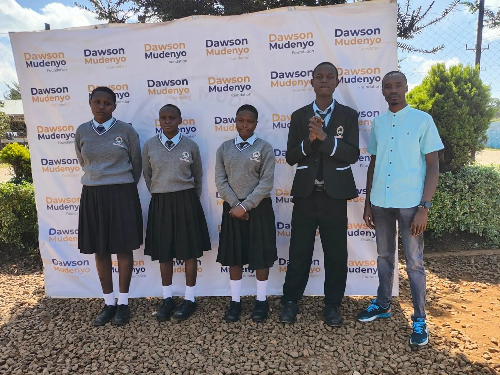
01Education
Scholarship Programme
Supports 80 students through high school, with continued support intended as they progress to college.
- Students currently supported
- 80
- Current stage
- High school
- Planned continuation
- College
Selected programmes and community initiatives currently supported by Dawson Mudenyo.
Current programme figures. Each figure stands alone and is not added to the others.

01Education
Supports 80 students through high school, with continued support intended as they progress to college.
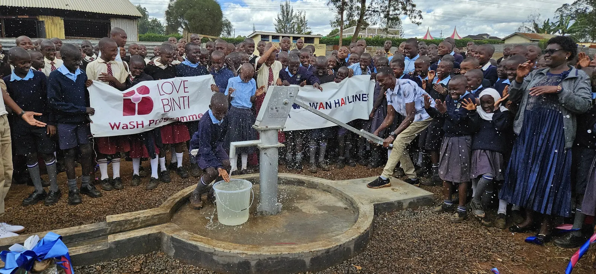
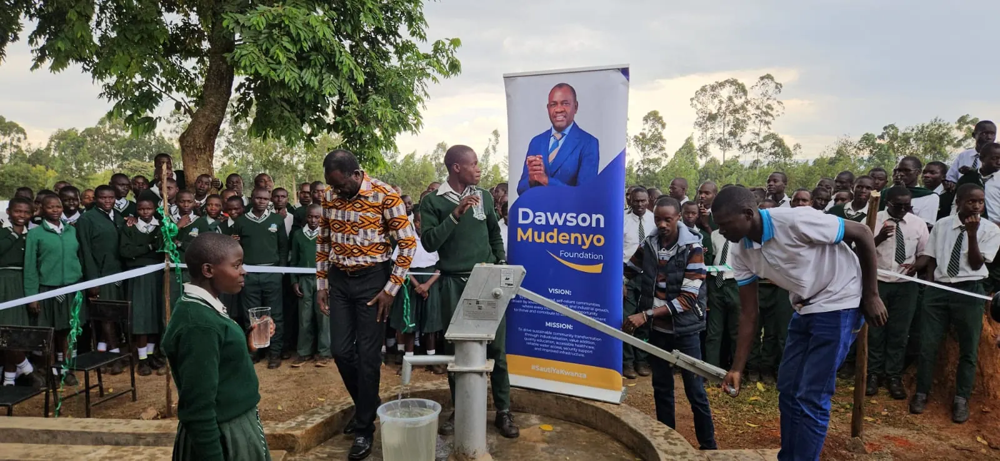
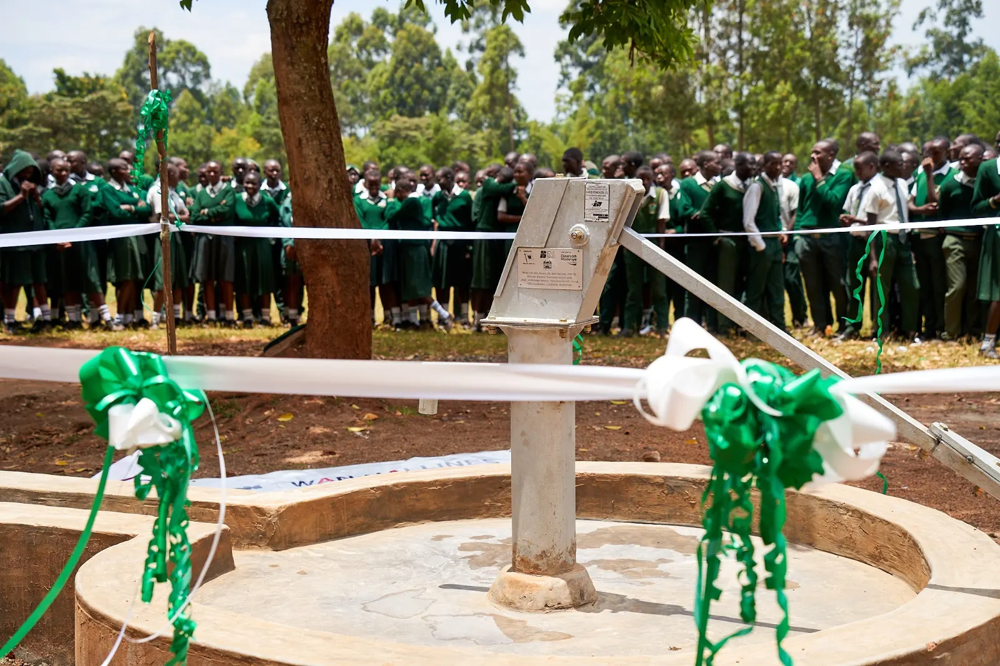
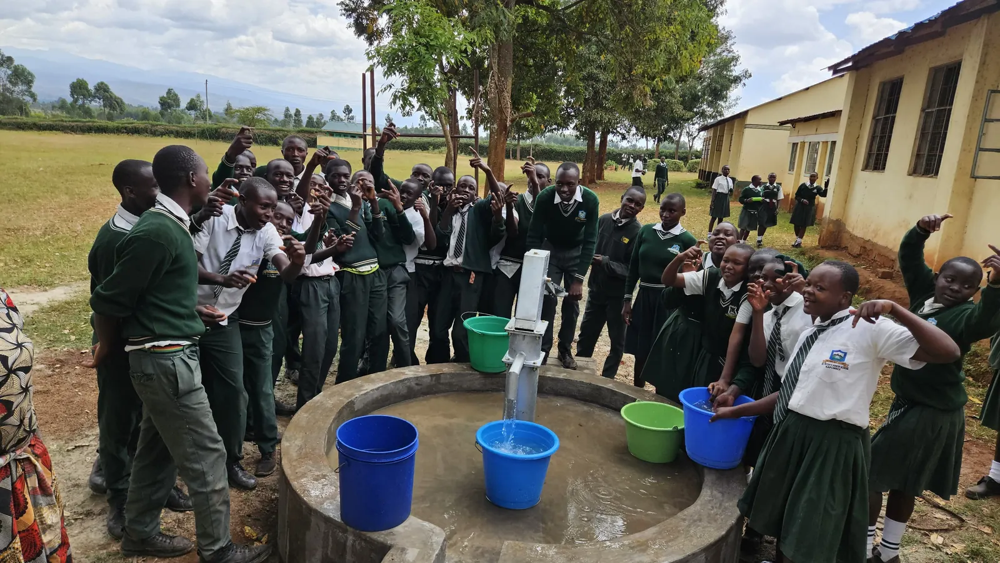
02Water access
Supports borehole drilling to improve access to water for communities and schools, with a target of 12 boreholes each year.
Borehole register: individual locations, status and years will be listed here as they are confirmed.
03School feeding
Supports a daily school feeding programme across approximately 30 schools.
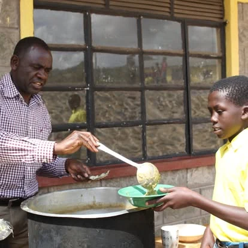
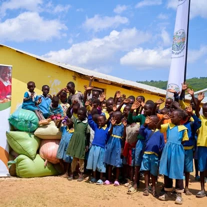
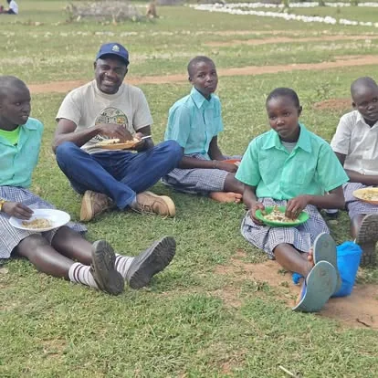
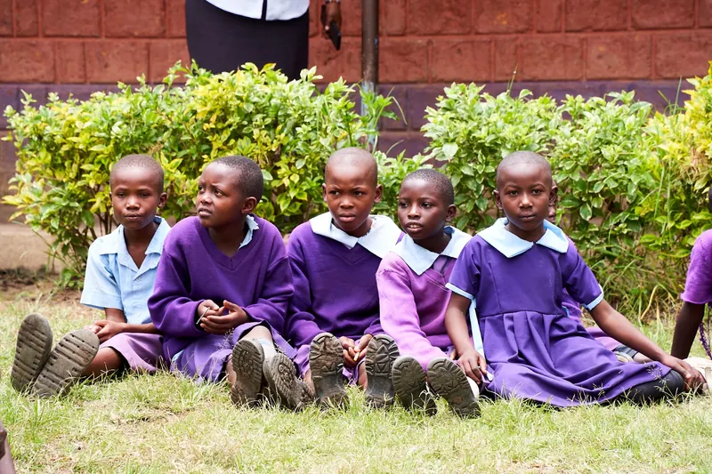
Serving meals, supplies at a school, sharing a meal with pupils, and pupils at a primary school.
People & opportunity
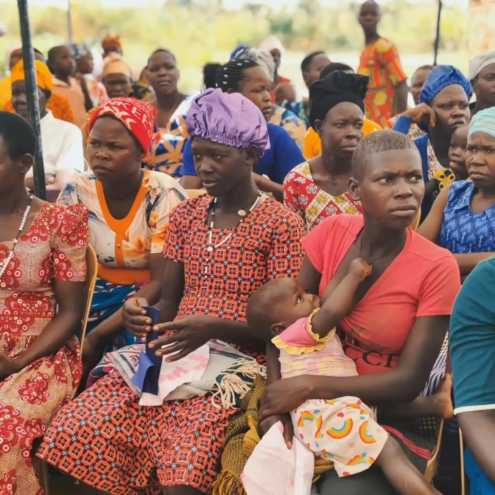
04Girls & young mothers
Support. Skills. Opportunity.
Supports girls and teen mothers to access support, hygiene education and practical skills.
Programme figures to be added.
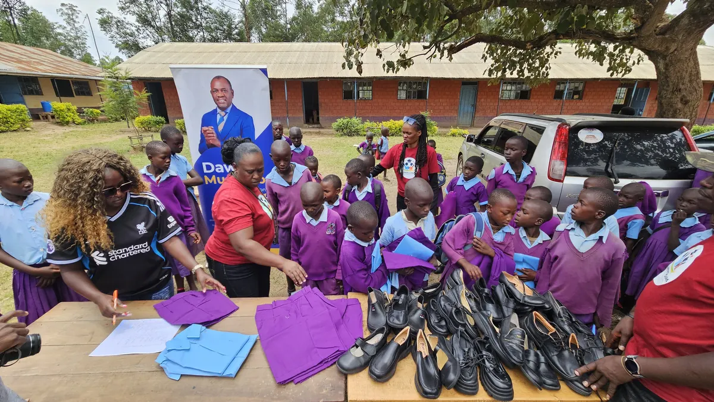
05Uniform A Child
A school uniform should not be a barrier to belonging.
Identifies students who lack school uniforms and provides them, so they can attend school with confidence and dignity.
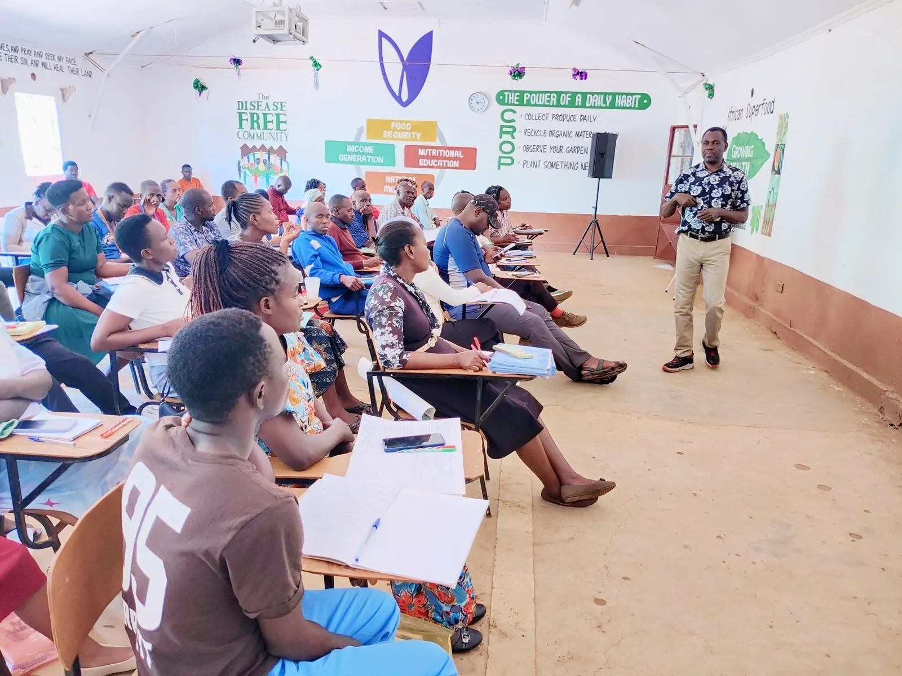
06Livelihoods
Training and practical support for farmers.
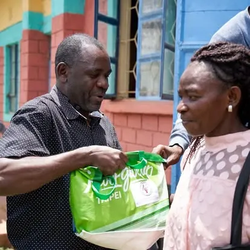
07Community response
Support when communities face difficult circumstances.
Supports communities during calamities and difficult periods.
Individual response stories will be added here.
Other initiatives
From the field
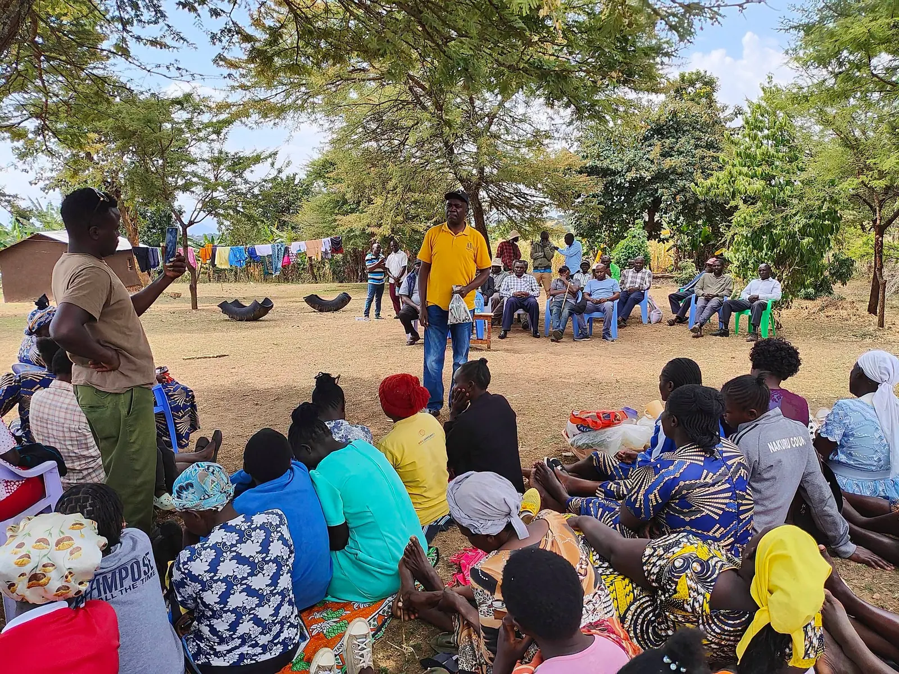
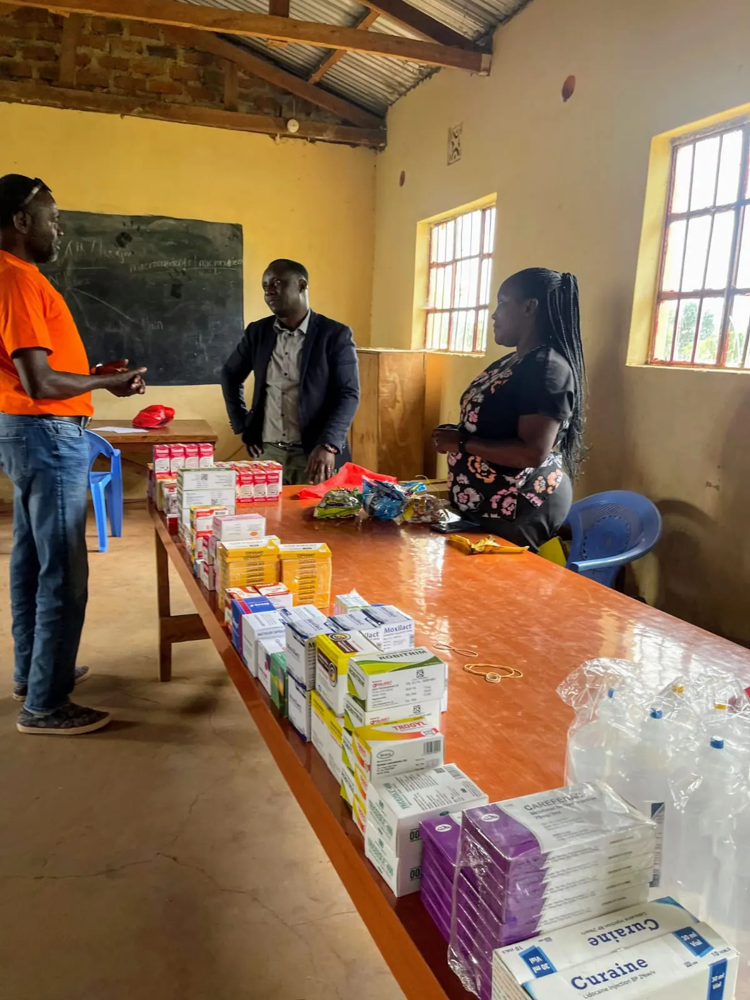
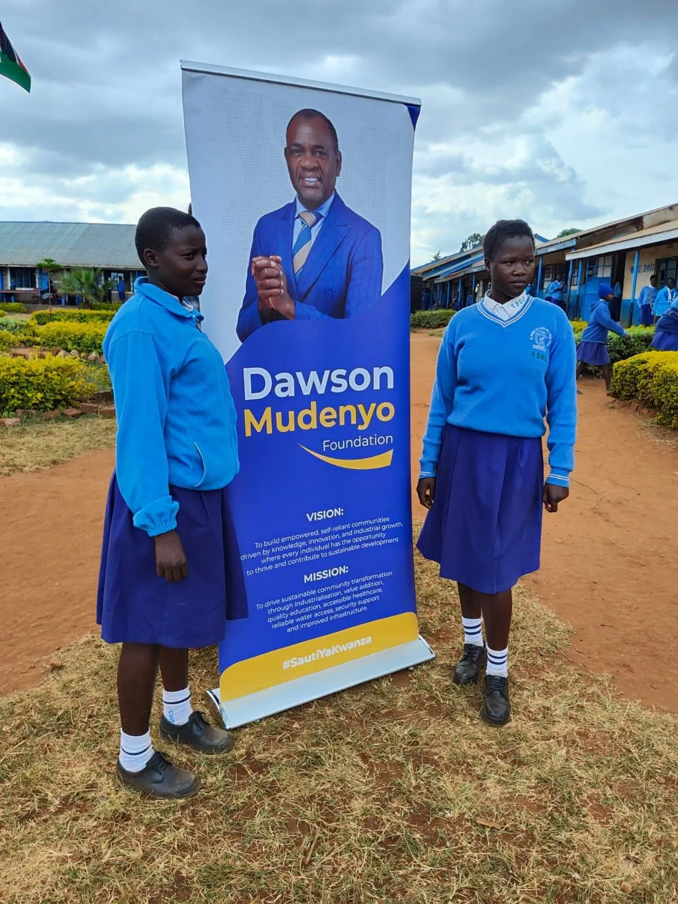
Share it through Community Connection.